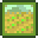

Archivo:Farming Skill Icon.png

{kind=link}
No disponible a mayor resolución.
Farming_Skill_Icon.png (64 × 64 píxeles; tamaño de archivo: 733 bytes; tipo MIME: image/png)
Historial del archivo
Haz clic sobre una fecha y hora para ver el archivo tal como apareció en ese momento.
| Fecha y hora | Miniatura | Dimensiones | Usuario | Comentario | |
|---|---|---|---|---|---|
| actual | 05:57 28 feb 2016 | 64 × 64 (733 bytes) | Katzeus |
Usos del archivo
Hay más de 100 páginas que usan este archivo. La lista siguiente sólo muestra las primeras 100 páginas que usan este archivo. También puedes consultar la lista completa.
- Aceitera
- Acelerador básico
- Acelerador deluxe
- Agricultura
- Almuerzo de granjero
- Anchoa
- Anguila
- Anguila de lava
- Arcilla
- Arenque
- Aspersor
- Aspersor de calidad
- Atún
- Atún blanco
- Babolín
- Bacalao largo
- Barbo
- Barril
- Berberecho
- Besugo
- Bonificadores
- Brea de pino
- Bígaro
- Cachuelo
- Calamar
- Cangrejo
- Cangrejo de río
- Caracol
- Carbón
- Carpa
- Carpa escorpión
- Carpa mutante
- Chirivía
- Cocina
- Colmena
- Cristal terrestre
- Cuarzo refinado
- Dorado
- Envasadora
- Espantapájaros
- Esturión
- Fabricación
- Fertilizante
- Fertilizante básico
- Fertilizante deluxe
- Fibra vegetal
- Fletán
- Gamba
- Guía de Inicio
- Habilidades
- Hidrogel básico
- Hidrogel deluxe
- Jarabe de arce
- La granja
- Langosta
- Lenguado
- Leyenda
- Lingote de cobre
- Lingote de hierro
- Lingote de iridio
- Lingote de oro
- Lubina
- Lucio
- Madera
- Madera noble
- Mayonesera
- Mejillón
- Mermeladas y Encurtidos
- Muyu
- Ostra
- Pargo colorado
- Pepino de mar
- Perca
- Pescados
- Pez carmesí
- Pez carámbano
- Pez fantasma
- Pez gato
- Pez globo
- Pez piedra
- Pez sol
- Piedra
- Pila
- Prensa de queso
- Productos artesanales
- Pulpo
- Rape
- Resina de roble
- Salmonete
- Salmón
- Sardina
- Sauri
- Semilladora
- Siluro
- Superpepino
- Sábalo
- Telar
- Tilapia
- Tipos de Granja
- Tortilla
Mira más enlaces a este archivo.
{kind=link}